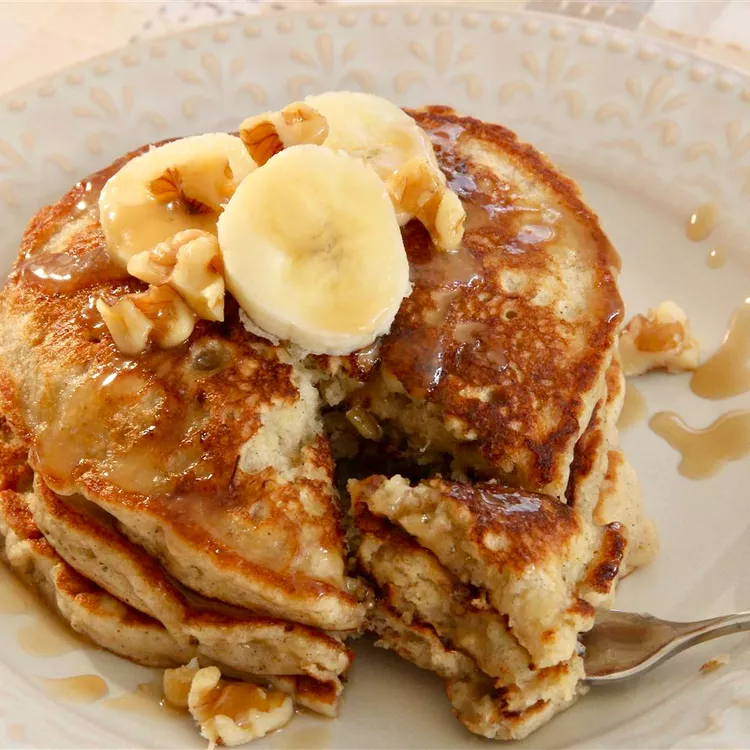

Banana Pancakes

Description
These banana walnut pancakes are some of the best I've ever had. They smell wonderful and taste like banana nut bread.
When you make these on Sunday mornings, they disappear before you know it.
Ingredients
- 1 cup all-purpose flour
- ¼ cup finely chopped walnuts
- 3 tablespoons white sugar
- 1 tablespoon baking powder
- ½ teaspoon ground nutmeg
- ½ teaspoon ground cinnamon
- ½ teaspoon baking soda
- ½ teaspoon salt
- 1 cup almond milk
- 2 small overripe bananas, mashed
- 1 ½ tablespoons butter, melted
- ½ teaspoon vanilla extract
- 1 large egg
Steps
- Mix together flour, walnuts, sugar, baking powder, nutmeg, cinnamon, baking soda, and salt in a large bowl.
- Make a well in the center and set aside.
- Whisk together almond milk, bananas, melted butter, and vanilla in a separate bowl until smooth.
- Whisk in egg. Pour mixture into the well of flour mixture; stir until batter is just combined.
- Heat a lightly greased skillet over medium-high heat. Drop 1/4 cup batter into the hot skillet.
- Tilt gently to spread batter evenly. Cook until bubbles form on top and the edges are firm, 3 to 4 minutes.
- Flip and cook until browned on the other side, 1 to 2 minutes more. Repeat with remaining batter.